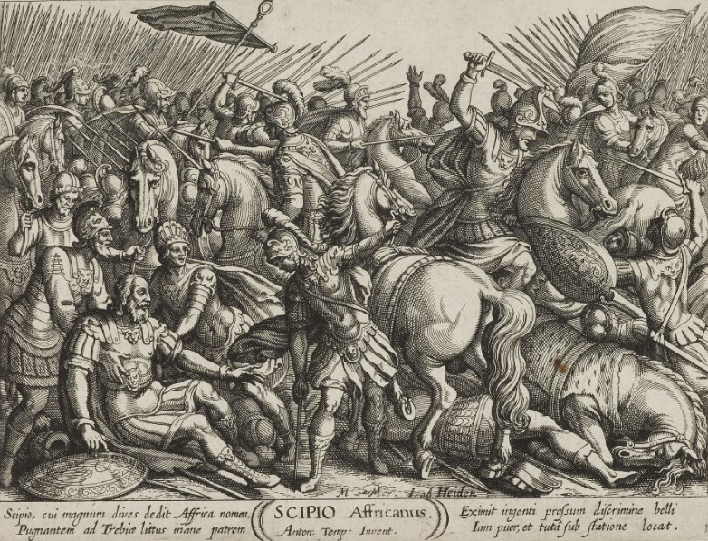

La Bataille de la Trébie

Le contexte
En décembre 218 av. J.-C., Hannibal vient tout juste de traverser les Alpes avec son armée affaiblie. Rome envoie ses légions commandées par le consul Sempronius Longus pour l'arrêter avant qu'il n'avance plus loin en Italie.
Sempronius est impatient de se battre. Il veut une victoire rapide pour sa gloire personnelle. Hannibal, lui, le sait — et va s'en servir.
Source : Wikipedia — Bataille de la Trébie
Le piège d'Hannibal
Hannibal prépare un piège brillant. Il envoie sa cavalerie légère provoquer les Romains tôt le matin, par un jour de grand froid. Les soldats romains, réveillés en urgence, traversent la rivière Trébie glacée sans avoir mangé ni s'être réchauffés.
Pendant ce temps, Hannibal avait caché 2 000 soldats d'élite dans des buissons le long de la rivière. Quand les Romains s'engagent dans la bataille, ces soldats surgissent par derrière et attaquent. Les Romains sont pris en tenaille — devant, sur les côtés et derrière.
Source : Wikipedia — Bataille de la Trébie
Le résultat
C'est un désastre total pour Rome. Sur les 40 000 soldats romains engagés dans la bataille, environ 30 000 sont tués. Seul un groupe de légionnaires réussit à percer les lignes carthaginoises et à s'échapper.
La bataille de la Trébie montre pour la première fois le génie militaire d'Hannibal. Il venait d'arriver en Italie épuisé après les Alpes, et il écrase déjà Rome. La terreur commence à se répandre dans toute l'Italie.
Source : Wikipedia — Bataille de la Trébie